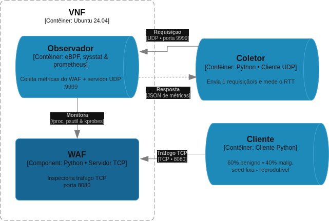
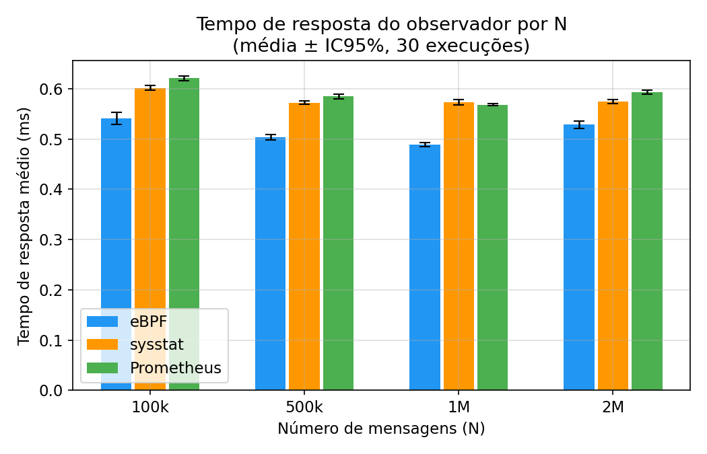
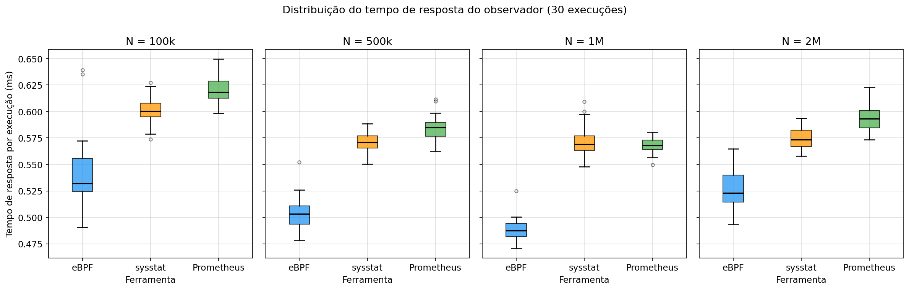
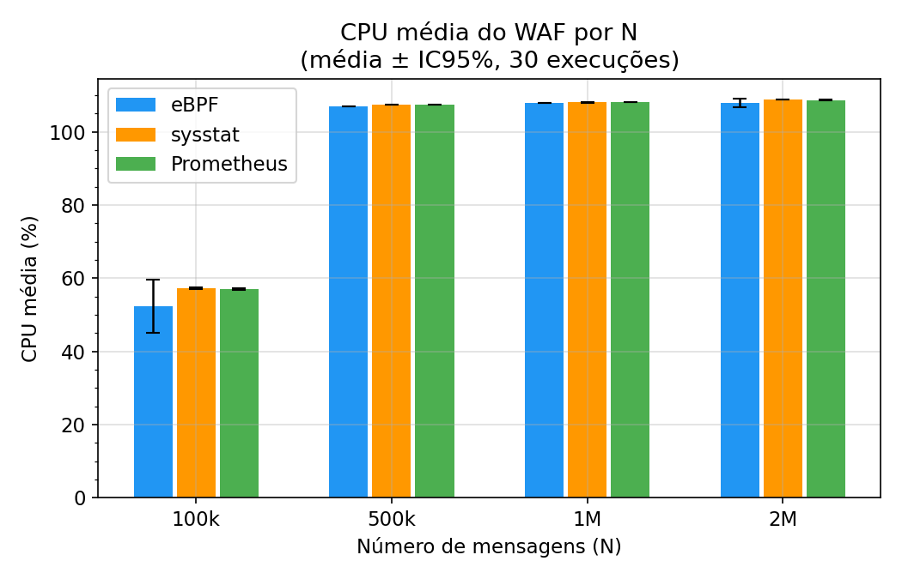
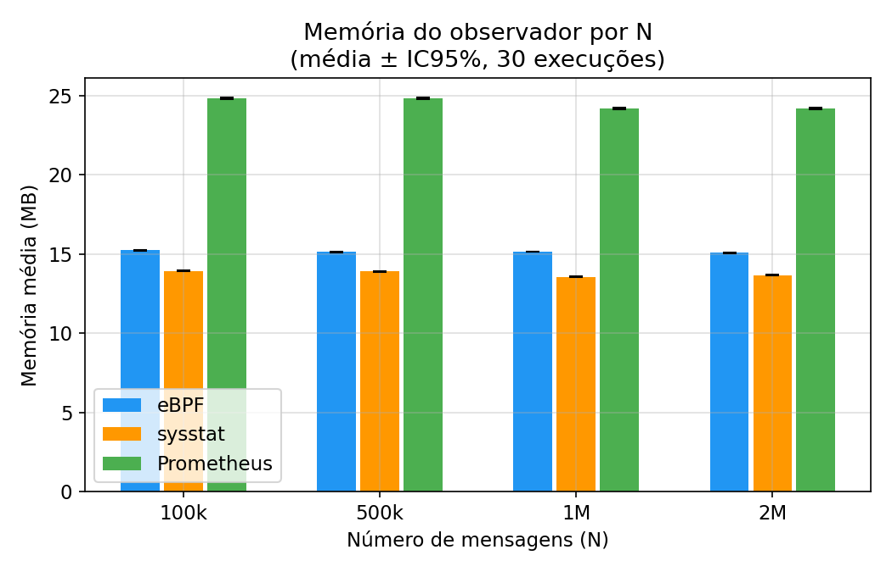

INSTITUTO FEDERAL DO PARANÁ — CAMPUS PINHAIS
Bacharelado em Ciência da Computação
Um estudo comparativo entre ferramentas de extração de comportamento
Rafael Correia Alves • João Pedro dos Santos Henrique Plinta
Orientador: Prof. Guilherme Werneck de Oliveira
Pré-banca — Pinhais, 2026
Pergunta central: qual é o custo de monitorar uma VNF? E qual ferramenta impõe a menor sobrecarga?
Métrica atrasada → o orquestrador reage tarde → violação de SLA.
O monitor roda co-localizado à VNF: compete pelos mesmos núcleos de CPU e memória.
A própria ferramenta de monitoramento consome recursos que deveriam ir para a VNF. Um coletor pesado degrada justamente o serviço que deveria apenas observar.
Pergunta de pesquisa: quais são as diferenças práticas de desempenho entre eBPF, Sysstat e Prometheus ao monitorar uma VNF, e qual oferece menor sobrecarga sem comprometer a coleta?
O eBPF, por operar no kernel, deve ter o menor tempo de resposta e o menor impacto, frente ao polling em espaço de usuário (Sysstat e Prometheus via /proc).
Faltam estudos quantitativos controlados comparando as três abordagens sobre uma mesma VNF, em condições equivalentes.
Geral: compreender como eBPF, Sysstat e Prometheus influenciam, em tempo de resposta e sobrecarga, o monitoramento de uma VNF sob diferentes cargas.
Específicos:
Kernel-level.
kprobes em tcp_sendmsg e tcp_cleanup_rbuf.
Conta bytes no kernel via mapas BPF; espaço de usuário só lê o agregado.
libbpf + CO-RE, sem cópia de pacotes.
User-space.
Polling de /proc/net/dev + psutil a cada requisição.
Lê e faz parsing de arquivos de texto do /proc.
Ferramenta consolidada e portável.
User-space.
Mesma lógica do Sysstat + servidor HTTP na porta 8000.
Expõe /metrics no padrão Prometheus.
Padrão de observabilidade em microsserviços.
Núcleo do contraste: ler contadores no kernel vs. fazer polling de /proc no espaço de usuário.
| Trabalho | Tecnologias | Comparou as 3? | Carga controlada / VNF |
|---|---|---|---|
| Cassagnes et al. (2020) | eBPF vs. polling | Não (sem Prometheus) | Rede geral |
| Sathyaseelan et al. (2024) | eBPF | Não | Kubernetes |
| Shahinfar et al. (2025) | eBPF | Não | Host / rede |
| Oliveira et al. (2026) | Sysstat | Não | DPI simulado |
| Este trabalho | eBPF + Sysstat + Prometheus | Sim | WAF, 100k–2M msgs |
Nenhum estudo compara as três abordagens sobre uma mesma VNF com cargas crescentes e controladas. É essa lacuna que preenchemos.
AMD Ryzen 5 5500 (6c/12t), 16 GB RAM
Ubuntu 26.04 LTS · kernel 7.0.0-15
3 pilhas Docker Compose isoladas
libbpf 1.3 · clang 18 · Python 3.12

Cliente → WAF (TCP 8080) → Observador (UDP 9999); probe.py mede o RTT a cada 1 s.
Tempo de resposta do observador (RTT UDP), medido em nanossegundos pelo probe.py.
CPU e memória do WAF e do próprio coletor.
Agregação: média ± IC95% (t de Student, n=30).

−8% a −15%
O eBPF teve o menor RTT em todos os volumes.

Separação clara: em 500k e 1M, a caixa do eBPF fica inteiramente abaixo das demais. Contrapartida: o eBPF tem maior dispersão e outliers ocasionais (máx. 1,06 ms em 2M).

A partir de 500k, o WAF satura em ~107–109% de uma thread, igual nos três casos (IC95% sobrepostos).
Confirma que nenhum coletor interfere no caminho de inspeção do WAF.
O coletor afeta sua própria sobrecarga, não a CPU da VNF.

Maior separação entre as abordagens:
Custo do servidor HTTP + prometheus_client. Constante com o volume.
Resultado mais limpo em N = 100k:
| Coletor | CPU média do observador |
|---|---|
| eBPF | 0,05% ± 0,01 |
| Prometheus | 2,37% |
| Sysstat | 4,66% |
O eBPF consome CPU 1 a 2 ordens de grandeza menor — ler mapas do kernel é muito mais barato que parsear /proc.
Em volumes maiores a métrica fica ruidosa (amostragem psutil + contenção entre contêineres) → usada como evidência qualitativa.
| Dimensão | eBPF | Sysstat | Prometheus |
|---|---|---|---|
| Tempo de resposta (RTT) | Menor | Intermediário | Maior |
| CPU do WAF | Equivalente | Equivalente | Equivalente |
| Memória do observador | ~15 MB | ~14 MB (menor) | ~24 MB (maior) |
| CPU do observador | Menor / estável | Maior / ruidosa | Maior / ruidosa |
Vence em desempenho e CPU do coletor.
Mais leve em memória; simples e portável.
Maior custo de memória; ganho só com scraping real.
Dúvidas e considerações da banca
Rafael Correia Alves • João Pedro dos Santos Henrique Plinta
github.com/joaopedroplinta/vnf-monitoring-benchmark